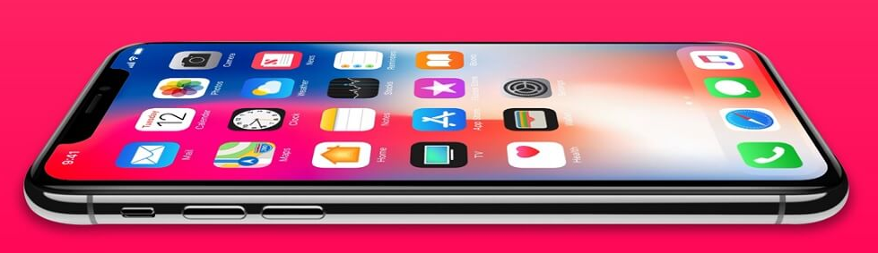
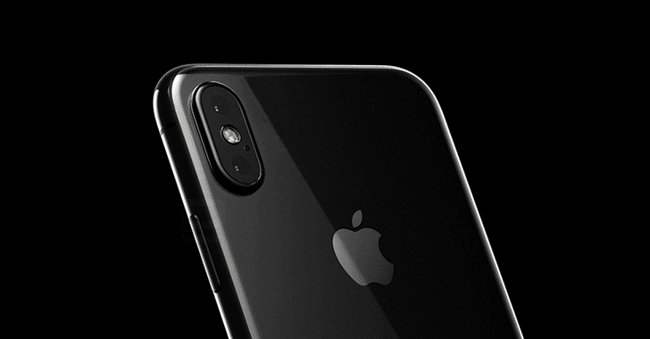

Life is easier on iPhone.And that starts as soon as you turn it on. |
 |
Will it be easy to switch to iPhone?Yes. There’s no need to save your stuff before switching from Android. Just download the Move to iOS app from the Google Play Store andit securely transfers your content for you — everything from photos and videos to contacts, messages, and Google Apps. You can even tradein your old smartphone for credit toward an iPhone. |
|
Does the camera really take better portraits?People love shooting portraits on iPhone. In fact, more pictures are taken on iPhone than on any other camera in the world. And the camera just keeps getting better . The new Portrait mode creates a depth-of-field effect so your subjects really pop. Portrait Lighting lets you choose from five studio-quality effects to make the lighting more dramatic. And on iPhone X, you can even shoot selfies in Portrait mode. |
 |
What makes iPhone so fast?iPhone runs on high-performance chips that are custom-designed by Apple — including the most powerful and smartest chip ever in a smartphone. And because these chips are so efficient, iPhone delivers long battery life. Combine all that with the latest iOS updates offering smart new features, and everything you do on iPhone feels fast and fluid. |
How does iPhone help protect my personal information?Unlike many other phones, important data on your iPhone is encrypted from the start, then protected by your passcode, Touch ID, or Face ID. Apple apps like Maps and Safari help keep private all the places you go and sites you visit. Apple will not sell your information to anyone for any reason. And easy-to-install software updates help protect your device and your data from security threats. |
What about the environment?Every time we create a product or service, we think about how to lessen its impact on the planet. For instance, iPhone is assembled without generating landfill waste. And each time you send an iMessage, make a FaceTime call, or ask Siri a question, it’s handled by Apple data servers running on 100 percent renewable energy. When you switch to iPhone, we’ll even recycle your Android for you. |
 |
Will iPhone be easy to use?You bet. Ease of use is at the core of everything Apple creates, and iOS is designed to be both simple and intuitive. With a swipe, a word — or even a glance — you can do things like make purchases with Apple Pay or customize your iPhone. It also comes with the Tips app, so you can get the most out of your device. |